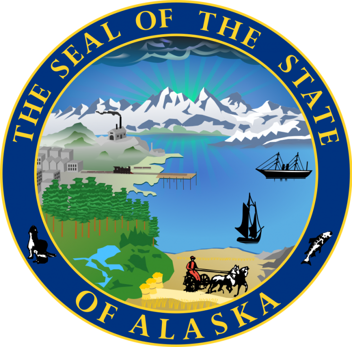

AlaszkaAlaszka (angolul Alaska, IPA: [əˈlæskə] Loudspeaker.svg kiejtése✩) az Amerikai Egyesült Államok egyik exklávé tagállama. (A másik Hawaii.) 1959. január 3-án vált az ország 49. tagállamává. Területe alapján a legnagyobb, lakosainak száma alapján azonban a harmadik legkisebb állam. Neve az Alyeska („nagy ország”, „nagy föld” vagy „szárazföld” jelentésű) aleut szóból származik. Első európai felfedezői és meghódítói, az oroszok nyelvén a neve Аля́ска (Alaszka), innen került át a név a többi európai nyelvbe. Alaszka (Hawaii mellett) az USA egyik olyan állama, amely nem szomszédos az összefüggő egységet alkotó 48 tagállam egyikével sem, ún. exklávé. Keletről Kanadával (Yukon és Brit Columbia államokkal) határos, északon a Beaufort-tenger, nyugaton a Csukcs-tenger, a Bering-szoros és a Bering-tenger veszi körül, délen pedig a Csendes-óceán. Az USA legnagyobb tagállama, 1 477 261 km² területű. Ha képzeletben a 48. szélességi fok alatti államokra helyezzük, Minnesotától Texasig és Georgiától Kaliforniáig húzódik. |